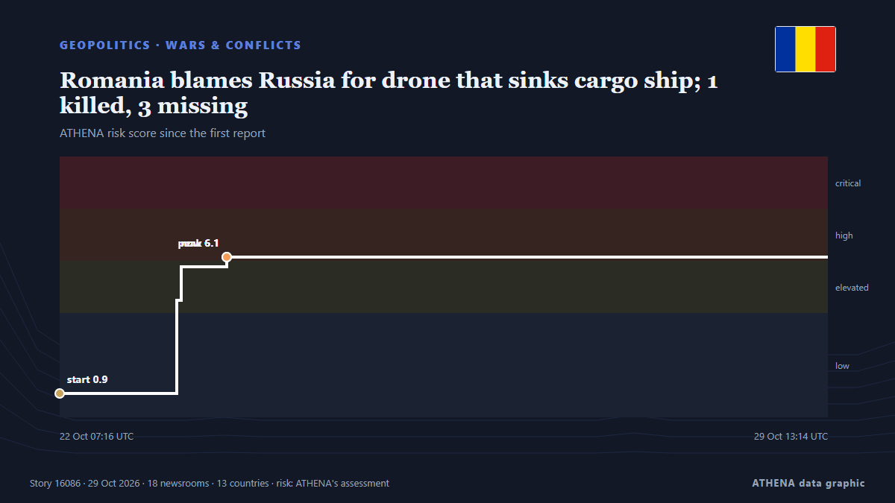

Romania blames Russia for drone that sinks cargo ship; 1 killed, 3 missing

Romania’s rescue operation recovered nine people and one deceased body from a distressed ship in the Black Sea, while three remain missing. из Arab News
Независимые источники: 18 изданий в 13 странах, с 23 окт.; первым сообщил Arab News; освещение идёт на спад. ATHENA оценивает риск как повышенный (6.0/10), прежде всего из-за тяжести описываемого ущерба и географического и отраслевого охвата. Уверенность — 89 % (высокая); подтверждают независимые источники: 18 изданий, средняя надёжность источников — 78 %. СМИ по странам: Украина (8), Болгария (4), Азербайджан (2). Освещение: с 23 окт. по 29 окт., 148 ч.
Почему это важно: Полномасштабное вторжение России в Украину началось в феврале 2022 года. Мониторинг следит за боевыми действиями, ударами по инфраструктуре и дипломатией вокруг войны так, как их освещает мировая пресса.
Что изменилось: 2 новых сообщений от 2 редакций за 24 часа до 29 окт..
Заголовки приводятся на английском языке, как они были опубликованы.
Коротко в цифрах
Отобрано, оценено и написано по опубликованной методологии ATHENA. Ни один редактор не вмешивается в отдельные события. Как это создаётся ›
| 23 Oct 09:04 UTC | 18 |
|---|---|
| 23 Oct 15:04 UTC | 4 |
| 23 Oct 21:04 UTC | 0 |
| 24 Oct 03:04 UTC | 0 |
| 24 Oct 09:04 UTC | 0 |
| 24 Oct 15:04 UTC | 0 |
| 24 Oct 21:04 UTC | 1 |
| 25 Oct 03:04 UTC | 0 |
| 25 Oct 09:04 UTC | 0 |
| 25 Oct 15:04 UTC | 0 |
| 25 Oct 21:04 UTC | 0 |
| 26 Oct 03:04 UTC | 0 |
| 26 Oct 09:04 UTC | 0 |
| 26 Oct 15:04 UTC | 0 |
| 26 Oct 21:04 UTC | 0 |
| 27 Oct 03:04 UTC | 0 |
| 27 Oct 09:04 UTC | 0 |
| 27 Oct 15:04 UTC | 2 |
| 27 Oct 21:04 UTC | 0 |
| 28 Oct 03:04 UTC | 0 |
| 28 Oct 09:04 UTC | 0 |
| 28 Oct 15:04 UTC | 0 |
| 28 Oct 21:04 UTC | 0 |
| 29 Oct 03:04 UTC | 0 |
| 29 Oct 09:04 UTC | 2 |
| 22 Oct 07:16 UTC | 0.9 |
|---|---|
| 23 Oct 09:49 UTC | 4.5 |
| 23 Oct 10:51 UTC | 5.8 |
| 23 Oct 21:06 UTC | 6.1 |
| 29 Oct 13:14 UTC | 6.0 |
Откуда эти цифры
Значимость
Риск
Уверенность
Освещение — кто сообщил и когда
заголовок в оригинале · открывает источник- Arab News · Саудовская АравияRomania blames Russia for drone that sinks cargo ship; 1 killed, 3 missing
- BTA (English) · БолгарияOne Dead, Three Missing as Cargo Ship Sinks off Romania's Constanta after Suspected Drone Strike
- Novinite · БолгарияBlack Sea: Drone Strike Sinks Ship off Romania, Leaving One Dead and Three Missing (UPDATED)
- Ukrainska Pravda (English) · УкраинаVessel presumably struck by drone sinks in Black Sea, one killed and three missing – video
- Kyiv Post · УкраинаOne Dead, Three Missing From Ship in ‘Distress’ in Black Sea
- The Straits Times · СингапурRomania blames Russia for drone that sinks cargo ship; 1 killed, 3 missing
- APA (English) · АзербайджанRomania blames Russia for drone that sinks cargo ship; 1 killed, 3 missing
- Ukrinform (English) · УкраинаCommercial vessel carrying Ukrainian sailors sinks off Romania's coast; drone attack not ruled out
- Novinite · БолгарияRomania's President: Russia Escalating the War After Drone Incident Near Constanța
- Times of India · ИндияRomania blames Russia as drone strike sinks cargo ship in Black Sea; 1 dead, 3 missing
- Anadolu Agency (English) · Турция1 dead, 3 missing after drone strike sinks ship off Romania, president says
- Euractiv · БельгияRomania blames Russia for new deadly attack on ship
- Ukrinform (English) · УкраинаRomania blames Russia for attacking cargo ship in Black Sea
- Kyiv Independent · УкраинаCivilian cargo ship sinks off coast of Romania after Russian drone strike, authorities say
- The Moscow Times · РоссияRomania Blames Russia for Deadly Drone Attack on Cargo Ship
- DW English · ГерманияRomania blames Russia for ship attack in the Black Sea
- Kyiv Post · УкраинаRomania Blames Russia for Drone Strike That Sank Black Sea Ship
- Ukrainska Pravda (English) · УкраинаUkrainian sailor killed and three missing as vessel sinks off Romanian coast after drone attack
- Ukrinform (English) · УкраинаUkrainian sailor killed as vessel sinks near Constanta, four others hospitalized – MFA
- Meduza (English) · РоссияRomania blames Russia for drone strike that sinks cargo ship in Black Sea, killing one sailor and leaving three missing
- Al Jazeera English · КатарRomania blames Russia after drone sinks ship in the Black Sea
- gCaptain · Соединенные ШтатыRomania Blames Russia For Drone That Sinks Cargo Ship; 1 Killed, 3 Missing
- BTA (English) · БолгарияCapsized Cargo Ship off Romania Expected to Enter Bulgaria's Area of Responsibility
- Khaama Press · АфганистанRussia Says Drone Strike Hit Cargo Ship Near Ukraine’s Odesa Port
- APA (English) · АзербайджанCargo ship carrying goods from Israel to Romania sinks in Black Sea